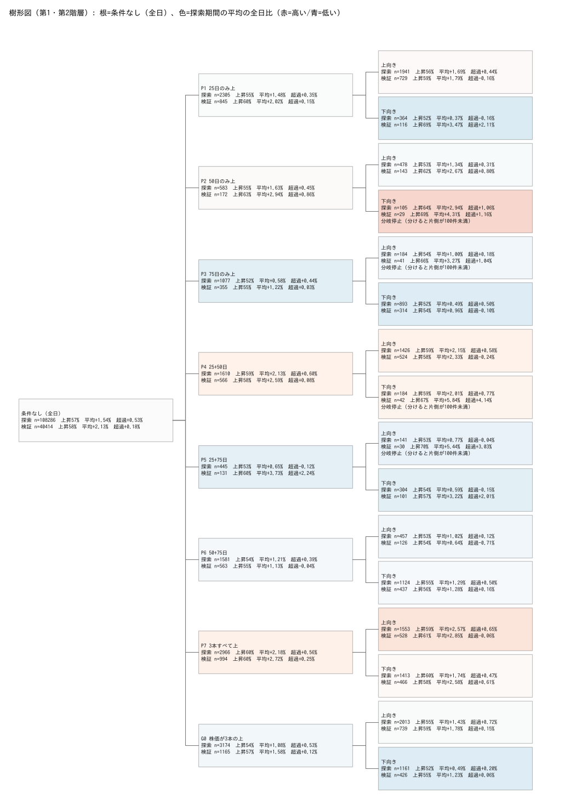
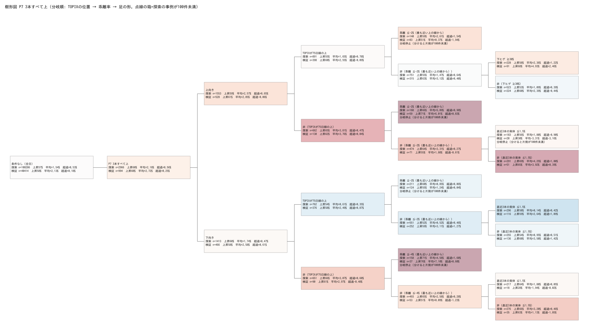
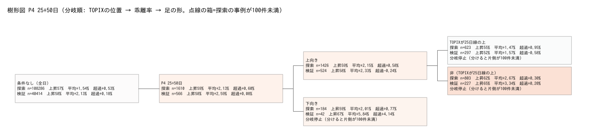
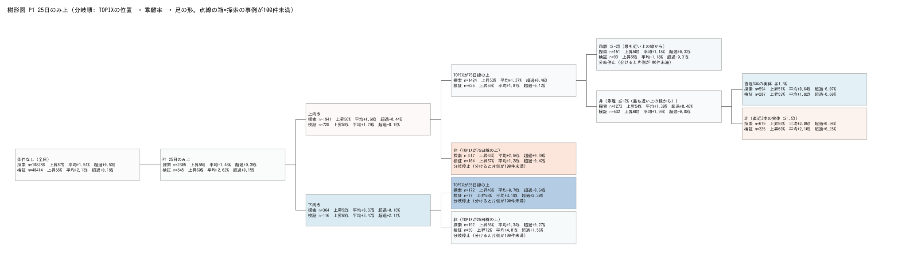
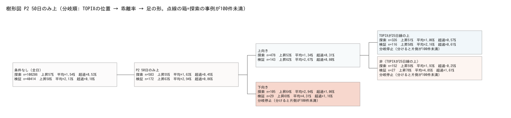
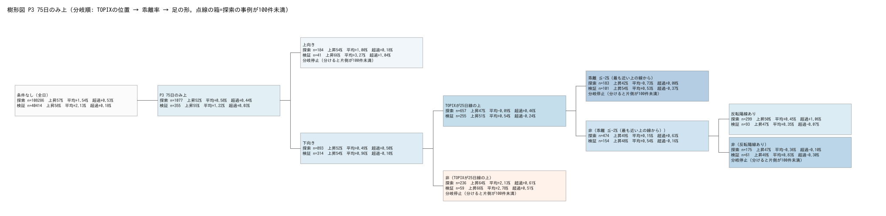
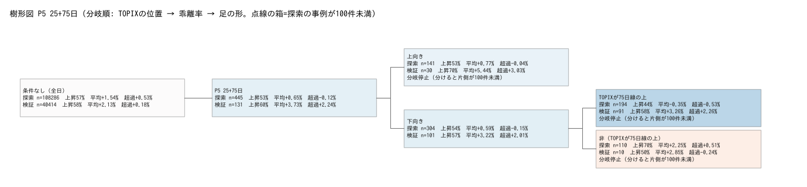
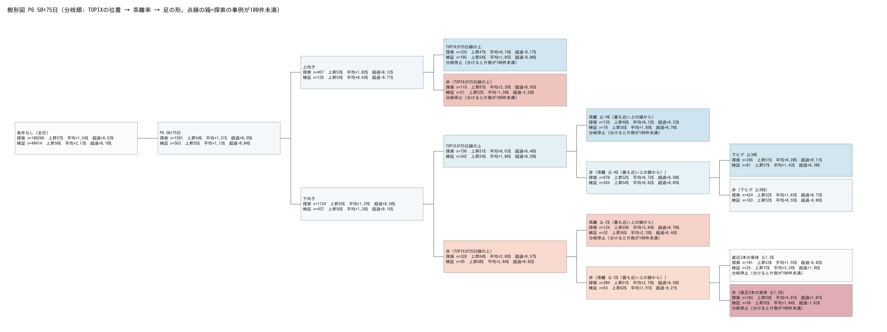
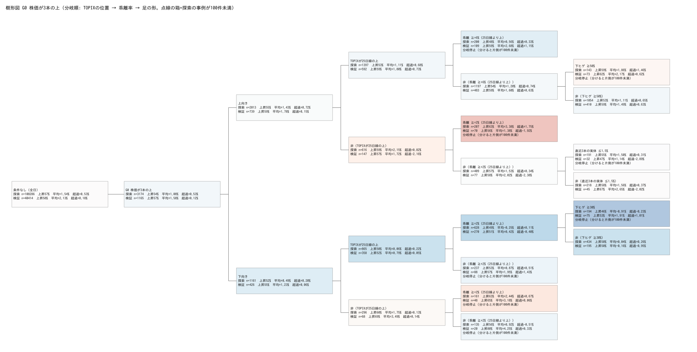

<title>移動平均 樹形図検証 v2</title>
<link rel="stylesheet" href="https://fonts.googleapis.com/css2?family=Noto+Sans+JP:wght@400;700&family=IBM+Plex+Mono:wght@400&display=swap">
<style>
/* layout: 上から「2銘柄の現在地 → 樹形図（図） → 探索と検証の比較 → イグジット → 反証 → 定義」の一列。表は横スクロール */
:root{--bg:#f5f6f8;--fg:#1b2130;--muted:#5b6474;--line:#d7dbe2;--panel:#ffffff;--up:#b8423d;--down:#2c62a8;--warn:#9a6a00;
--sans:"Noto Sans JP",system-ui,"Hiragino Sans",sans-serif;--mono:"IBM Plex Mono",ui-monospace,monospace}
@media (prefers-color-scheme:dark){:root:not([data-theme="light"]){--bg:#13161c;--fg:#e7eaf0;--muted:#a1a9b6;--line:#2e343f;--panel:#1b1f27;--up:#e2706b;--down:#6a9ce0;--warn:#e0b04a;color-scheme:dark}}
:root[data-theme="dark"]{--bg:#13161c;--fg:#e7eaf0;--muted:#a1a9b6;--line:#2e343f;--panel:#1b1f27;--up:#e2706b;--down:#6a9ce0;--warn:#e0b04a;color-scheme:dark}
body{background:var(--bg);color:var(--fg);font-family:var(--sans);padding-inline:16px;padding-block:12px 48px;line-height:1.7}
main{max-width:1100px;margin-inline:auto;display:flex;flex-direction:column;gap:28px}
h1{font-size:1.45rem;text-wrap:balance;margin:0}
h2{font-size:1.1rem;text-wrap:balance;margin:0 0 8px;padding-bottom:4px;border-bottom:1px solid var(--line)}
p,li{max-width:72ch} .muted{color:var(--muted);font-size:.86rem}
.wrap{overflow-x:auto;border:1px solid var(--line);border-radius:6px;background:var(--panel)}
table{border-collapse:collapse;font-size:.82rem;min-width:100%;font-variant-numeric:tabular-nums}
th,td{padding:6px 9px;border-bottom:1px solid var(--line);text-align:left;vertical-align:top;white-space:nowrap}
td.num,th.num{text-align:right} td.wrapc{white-space:normal;min-width:16rem}
th{font-weight:700;background:var(--bg)}
.tag{display:inline-block;font-size:.75rem;padding:0 6px;border-radius:3px;border:1px solid currentColor}
.keep{color:var(--up)} .drop{color:var(--down)} .hold{color:var(--warn)}
figure{margin:0;background:#fff;border:1px solid var(--line);border-radius:6px;padding:6px;overflow-x:auto}
figure img{max-width:none;width:100%;min-width:720px;height:auto;display:block}
figcaption{font-size:.8rem;color:#333;padding:4px 2px 0}
details{border:1px solid var(--line);border-radius:6px;background:var(--panel);padding:8px 12px}
summary{cursor:pointer;font-weight:700} summary:focus-visible{outline:2px solid var(--down);outline-offset:2px}
.figs{display:flex;flex-direction:column;gap:14px;margin-top:10px}
ol li,ul li{margin-bottom:4px}
code{font-family:var(--mono);font-size:.85em}
</style>
<main>
<header>
<h1>移動平均線パターンの樹形図検証 v2</h1>
<p class="muted">TOPIX100（現構成を遡って使用＝生存者バイアスあり）／25・50・75日の単純移動平均／探索期間 2020-06〜2024-12、検証期間 2025-01〜2026-10-13／
20日リターン＝翌日寄付→20営業日後終値。データ：Yahoo Finance、2026-10-13 15:54 取得（大引け後）。売買の推奨ではありません。</p>
</header>

<section>
<h2>2026-10-13 時点の2銘柄の位置</h2>
<div class="wrap"><table>
<tr><th>銘柄</th><th class="num">終値</th><th>25／50／75日線</th><th>分類</th><th>樹形図の枝</th><th class="num">探索 件数</th><th class="num">探索 上昇</th><th class="num">探索 平均</th><th class="num">検証 件数</th><th class="num">検証 上昇</th><th class="num">検証 平均</th></tr>
<tr><td>塩野義 4507</td><td class="num">2,814.5</td><td>2,858.7／2,872.7／2,861.3</td><td>P7・75日線下向き</td><td class="wrapc">TOPIXが75日線の上 → 乖離 −1.55%（−2%より浅い） → 直近3本の実体 ≤1.5%</td><td class="num">296</td><td class="num">50.0%</td><td class="num">+0.14%</td><td class="num">116</td><td class="num">58.6%</td><td class="num">+2.64%</td></tr>
<tr><td>KDDI 9433</td><td class="num">2,887.5</td><td>2,974.4／2,941.4／2,892.4</td><td>P7・75日線上向き<br><span class="muted">ザラ場ではP4、引けで75日線も下回った</span></td><td class="wrapc">TOPIXが75日線の上 → 乖離 −0.17% → 下ヒゲ 30%未満</td><td class="num">523</td><td class="num">53.2%</td><td class="num">+1.09%</td><td class="num">224</td><td class="num">60.3%</td><td class="num">+2.39%</td></tr>
<tr><td>全日（基準）</td><td></td><td></td><td></td><td></td><td class="num">108,286</td><td class="num">56.6%</td><td class="num">+1.54%</td><td class="num">40,414</td><td class="num">57.9%</td><td class="num">+2.13%</td></tr>
</table></div>
<p class="muted">2銘柄の枝はどちらも、探索期間では全日を下回っていました。</p>
</section>

<section>
<h2>樹形図</h2>
<p>分岐の順番は、探索期間の第3階層候補で差が大きかった順です：<b>TOPIXの位置（平均 1.91pt）→ 乖離率（1.07pt）→ 足の形（0.98pt）</b>。MACD（0.75pt）と出来高（0.55pt）は差が小さく、使っていません。分けると片側が100件未満になる枝は分岐を止めています。</p>
<p class="muted">各箱：探索／検証それぞれの件数・上昇割合・平均・対TOPIX超過。色は探索期間の平均の全日比（赤＝高い、青＝低い）。点線の箱＝探索の事例が100件未満。図は横にスクロールできます。</p>
<div class="figs">
<figure><figcaption>全体（第1・第2階層）</figcaption></figure>
<figure><figcaption>P7 3本すべて上（塩野義・KDDI の現在地）</figcaption></figure>
<figure><figcaption>P4 25日＋50日が上</figcaption></figure>
</div>
<details><summary>他のパターンの樹形図（P1・P2・P3・P5・P6・G0）</summary>
<div class="figs">
<figure><figcaption>P1 25日のみ上</figcaption></figure>
<figure><figcaption>P2 50日のみ上</figcaption></figure>
<figure><figcaption>P3 75日のみ上</figcaption></figure>
<figure><figcaption>P5 25日＋75日が上</figcaption></figure>
<figure><figcaption>P6 50日＋75日が上</figcaption></figure>
<figure><figcaption>G0 株価が3本の上</figcaption></figure>
</div></details>
</section>

<section>
<h2>探索期間で選んだ枝：探索 vs 検証</h2>
<p class="muted">選定は探索期間のみ（100件以上、かつ平均・上昇割合・対TOPIX超過のすべてが全日を上回る枝を最大6本）＋塩野義型・KDDI型の第2階層。検証の全日は 平均 2.13%／上昇 57.9%／超過 0.18%。</p>
<div class="wrap"><table>
<tr><th>枝</th><th class="num">探索 件数</th><th class="num">上昇</th><th class="num">平均</th><th class="num">超過</th><th class="num">検証 件数</th><th class="num">上昇</th><th class="num">平均</th><th class="num">超過</th><th>検証での判定</th></tr>
<tr><td class="wrapc">P7上向き → TOPIX 75日線の下 → 乖離 −2%以下</td><td class="num">188</td><td class="num">66.5%</td><td class="num">5.09%</td><td class="num">0.98%</td><td class="num">59</td><td class="num">71.2%</td><td class="num">6.01%</td><td class="num">0.83%</td><td><span class="tag hold">件数不足</span></td></tr>
<tr><td class="wrapc">P7下向き → TOPIX 75日線の下 → 乖離 −4%以下</td><td class="num">158</td><td class="num">70.9%</td><td class="num">4.58%</td><td class="num">1.60%</td><td class="num">37</td><td class="num">75.7%</td><td class="num">7.10%</td><td class="num">0.60%</td><td><span class="tag hold">件数不足</span></td></tr>
<tr><td class="wrapc">P7上向き → TOPIX 75日線の下 → 乖離 −2%より浅い → 実体が小さくない</td><td class="num">291</td><td class="num">69.1%</td><td class="num">4.25%</td><td class="num">1.00%</td><td class="num">51</td><td class="num">64.7%</td><td class="num">3.92%</td><td class="num">0.39%</td><td><span class="tag hold">件数不足</span></td></tr>
<tr><td class="wrapc">P6下向き → TOPIX 25日線の下 → 乖離 −2%より浅い → 実体が小さくない</td><td class="num">103</td><td class="num">68.9%</td><td class="num">4.01%</td><td class="num">1.01%</td><td class="num">38</td><td class="num">55.3%</td><td class="num">1.04%</td><td class="num">−1.63%</td><td><span class="tag drop">低下</span></td></tr>
<tr><td class="wrapc">P6上向き → TOPIX 25日線の下</td><td class="num">118</td><td class="num">67.0%</td><td class="num">3.39%</td><td class="num">0.95%</td><td class="num">21</td><td class="num">52.4%</td><td class="num">−1.39%</td><td class="num">−4.28%</td><td><span class="tag drop">低下</span></td></tr>
<tr><td class="wrapc">G0上向き → TOPIX 25日線の下 → 乖離 +2%以上</td><td class="num">207</td><td class="num">62.8%</td><td class="num">3.38%</td><td class="num">1.75%</td><td class="num">70</td><td class="num">55.7%</td><td class="num">1.38%</td><td class="num">−1.92%</td><td><span class="tag drop">低下</span></td></tr>
<tr><td class="wrapc">P7下向き（塩野義型、第2階層）</td><td class="num">1,413</td><td class="num">59.8%</td><td class="num">1.74%</td><td class="num">0.47%</td><td class="num">466</td><td class="num">58.4%</td><td class="num">2.58%</td><td class="num">0.61%</td><td><span class="tag keep">維持</span> <span class="muted">探索でも全日と有意差なし</span></td></tr>
<tr><td class="wrapc">P4上向き（KDDI型、第2階層）</td><td class="num">1,426</td><td class="num">59.1%</td><td class="num">2.15%</td><td class="num">0.58%</td><td class="num">524</td><td class="num">57.8%</td><td class="num">2.33%</td><td class="num">−0.24%</td><td><span class="tag drop">低下</span> <span class="muted">上昇割合・超過が全日以下</span></td></tr>
</table></div>
</section>

<section>
<h2>エントリー・イグジット（30ルールから探索期間で最良を選び、検証期間で確認）</h2>
<div class="wrap"><table>
<tr><th>枝</th><th>探索で選ばれたルール</th><th>探索 平均／勝率／最大下落／保有</th><th>検証 平均／勝率／最大下落／保有</th><th>判定</th></tr>
<tr><td>P7下向き（塩野義型）</td><td>引け・75日線到達（上限40日）</td><td>2.02%／83.9%／−4.2%／15.4日</td><td>2.29%／81.7%／−5.3%／16.2日</td><td><span class="tag drop">低下</span> <span class="muted">寄付・固定20日（2.58%）未満</span></td></tr>
<tr><td>P4上向き（KDDI型）</td><td>引け・固定20日</td><td>2.20%／58.8%／−5.5%／20日</td><td>2.44%／58.4%／−6.5%／20日</td><td><span class="tag keep">維持</span> <span class="muted">対TOPIX超過は全日以下</span></td></tr>
<tr><td>P7下向き→TOPIX 75日線の下→乖離−4%以下</td><td>引け・50日線到達</td><td>5.65%／86.7%／−4.6%／19.2日</td><td>10.54%／85.3%／−5.7%／19.5日（34件）</td><td><span class="tag hold">件数不足</span></td></tr>
</table></div>
<ul>
<li>線への到達で売るルールは勝率が高くなります（78〜91%）。ただし平均は固定20日より低いか同程度です。</li>
<li>利確・損切りの9通りの組み合わせは、すべて固定20日の平均を下回りました（両枝・両期間）。</li>
<li>引けで入ると寄付より+0.1pt程度高くなります。S株を寄付で約定する前提なら、寄付の数字が実際に近い値です。</li>
</ul>
</section>

<section>
<h2>「上がりやすい」とは言えない根拠</h2>
<ol>
<li>探索期間で良かった枝のほとんどは「TOPIXが移動平均線の下」＝相場全体の下落局面です。平均+3〜5%に対して、対TOPIX超過は+1%前後にとどまります。</li>
<li>その局面は検証期間にほとんど来ておらず（21〜70件）、確認できません。</li>
<li>探索期間の上位6本のうち3本は、検証期間で平均・上昇割合・超過のすべてが全日以下でした。</li>
<li>KDDI型は、探索で全日比+0.61pt（有意）でしたが、検証では対TOPIX超過が全日を下回りました。</li>
<li>塩野義型は、探索期間でも全日と差がありません（95%CI −0.35〜+0.81pt）。</li>
<li>枝と30ルールの中から最良を選んでいるため、探索期間の成績は良く見えやすくなっています。</li>
<li>暴落時の除外（TOPIX 20日で−5〜−10%）を入れると、どの閾値でも平均はむしろ下がりました。暴落直後の事例が反発していたためです。</li>
<li>生存者バイアスあり（全日でも対TOPIX超過がプラス）。売買コスト・配当は含みません。検証期間は約1年9か月の上昇相場です。</li>
</ol>
</section>

<section>
<h2>定義（要点）</h2>
<ul class="muted">
<li>事例：状態（パターン×75日線の傾き）に入った初日のみ。3営業日以内に同じ状態へ戻った場合は継続扱い。許容日数を0／5／10にしても平均はほぼ同じ。</li>
<li>探索期間は、20日後の結果が2024年内に収まる事例のみ（2024-12-02まで）。</li>
<li>乖離率：株価の上にある線のうち、最も近い線からの乖離（G0は25日線からの乖離）。</li>
<li>全数値・定義・再現手順はリポジトリの <code>research/ma_rebound_v2/README.md</code> と <code>results/tables_v2.md</code> にあります。</li>
</ul>
</section>
</main>
